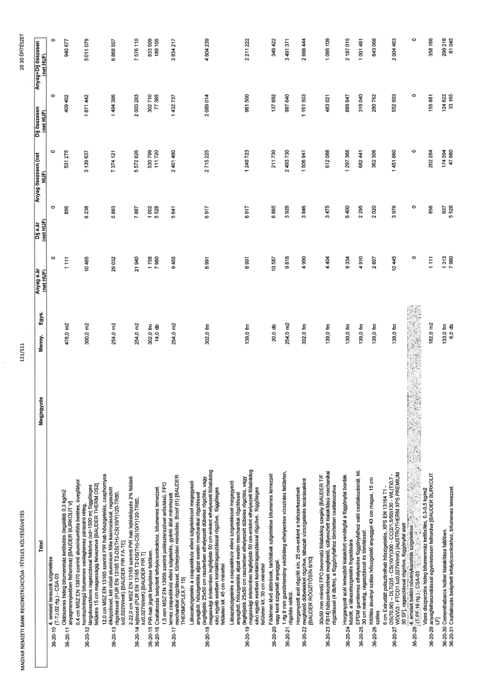

| Tétel | Megjegyzés | Menny. | Egys. | Anyag e.ár (net HUF) | Díj e.ár (net HUF) | Anyag összesen (net HUF) | Díj összesen (net HUF) | Anyag+Díj összesen (net HUF) |
|---|---|---|---|---|---|---|---|---|
| 4. emeleti teraszok szigetelése (T-TJ.02 rtg.) - CSA-03 | NaN | NaN | NaN | 0 | 0 | 0 | 0 | 0 |
| Oldószeres hideg bitumenmáz kellősítés (legalább 0,3 kg/m2 anyagmennyiségben felhordva) [BAUDER BURKOLIT V] | NaN | 478,0 m2 | 1 111 | 856 | 531 275 | 409 402 | 940 677 | 0 |
| 0,4 mm MSZ EN 13970 szerinti alumíniumfólia betétes, üvegfátyol hordozórétegű bitumenes vastaglemez párazáró réteg, lángolvasztásos ragasztással fektetve (sd>1500 m) függőleges felületre 15 cm magasságig felvezetve [BAUDER THERM DS2] | NaN | 300,0 m2 | 1 0465 | 6 238 | 3 139 637 | 1 871 442 | 5 011 079 | 0 |
| 12,0 cm MSZ EN 13165 szerinti PIR hab hőszigetelés, csaphornyos élképzéssel, két oldali alumínium fólia kasírozással, ragasztott rögzítéssel (PUR EN 13165 T2-DS(TH)-CS(10/Y)120-TR80, λ≤0,022W/mK) [BAUDER PIR FA-TE] | NaN | 254,0 m2 | 29 032 | 5 883 | 7 374 121 | 1 494 386 | 8 868 507 | 0 |
| 2-22,0 cm MSZ EN 13165 szerinti PIR hab lejtésképzés 2% felületi lejtéssel (PUR EN 13165 T2-DS(TH)-CS(10/Y)120-TR80, λ≤0,027W/mK) [BAUDER PIR T] | NaN | 254,0 m2 | 21 940 | 7 887 | 5 572 826 | 2 003 283 | 7 576 110 | 0 |
| PIR-hab lejték beépítése faltőben. | NaN | 302,0 fm | 1 758 | 1 002 | 530 799 | 302 710 | 833 509 | 0 |
| Csatlakozás beépített lefolyócsonkokhoz, bitumenes lemezzel. | NaN | 14,0 db | 7 980 | 5 528 | 111 720 | 77 385 | 189 105 | 0 |
| 1,5 mm MSZ EN 13956 szerinti poliészterszövet erősítésű, FPO lemez csapadékvíz elleni szigetelés, gyártó által méretezett mechanikai rögzítéssel, tűzterjedési minősítés: Broof (t1) [BAUDER THERMOPLEX P 15] | NaN | 254,0 m2 | 9 455 | 5 641 | 2 401 480 | 1 432 737 | 3 834 217 | 0 |
| Lábazatszigetelés a csapadékvíz elleni szigeteléssel megegyező anyagból, hőszigetelés aljzat esetén mechanikai rögzítéssel (legfeljebb 25x50 cm raszterben elhelyezett dübeles rögzítés, vagy magassági értelemben legfeljebb 50 cm-enként elhelyezett fóliabádog sáv) egyéb esetben kontaktragasztással rögzítve, függőleges felületen kit. 45 cm mérettel | NaN | 302,0 fm | 8 991 | 6 917 | 2 715 225 | 2 089 014 | 4 804 239 | 0 |
| Lábazatszigetelés a csapadékvíz elleni szigeteléssel megegyező anyagból, hőszigetelés aljzat esetén mechanikai rögzítéssel (legfeljebb 25x50 cm raszterben elhelyezett dübeles rögzítés, vagy magassági értelemben legfeljebb 50 cm-enként elhelyezett fóliabádog sáv) egyéb esetben kontaktragasztással rögzítve, függőleges felületen kit. 30 cm mérettel | NaN | 139,0 fm | 8 991 | 6 917 | 1 249 723 | 961 500 | 2 211 222 | 0 |
| Födémen lévő áttörések, tartólábak szigetelése bitumenes lemezzel vagy kent szigetelő anyaggal. | NaN | 20,0 db | 10 587 | 6 885 | 211 730 | 137 692 | 349 422 | 0 |
| 1 rtg 8 mm gumiőrlemény védőréteg elhelyezése vízszintes felületen, rögzítés nélkül. | NaN | 254,0 m2 | 9 818 | 3 928 | 2 493 730 | 997 640 | 3 491 371 | 0 |
| Horganyzott acél rögzítő sín, 25 cm-enként a hátszerkezetnek megfelelő dübelekkel rögzítve, lábazati vízszigetelés lezárásaként [BAUDER RÖGZÍTŐSÍN 6/10] | NaN | 302,0 fm | 4 990 | 3 846 | 1 506 941 | 1 161 503 | 2 668 444 | 0 |
| 30x50 mm méretű FPO bevonatú fóliabádog szegély [BAUDER T/F FB14] hátszerkezetnek megfelelő, süllyesztett kialakítású mechanikai rögzítéssel (4 db/fm), a függőnyfalhoz tömítetten csatlakozatva | NaN | 139,0 fm | 4 404 | 3 475 | 612 088 | 483 021 | 1 095 109 | 0 |
| Horganyzott acél lemezből kialakított vendégfal a függőnyfal bordák között, a lábazatszigetelés fogadására | NaN | 139,0 fm | 9 334 | 6 400 | 1 297 368 | 889 647 | 2 187 015 | 0 |
| EPDM gumilemez elhelyezése függőnyfalhoz való csatlakozásnál, kit. 30 cm méretig, ragasztással és tömítéssel. | NaN | 139,0 fm | 4 910 | 2 295 | 682 441 | 319 040 | 1 001 481 | 0 |
| Kitöltés ásványi szálas hőszigetelő anyaggal 43 cm magas, 15 cm széles | NaN | 139,0 fm | 2 607 | 2 020 | 362 306 | 280 762 | 643 068 | 0 |
| 6 cm Extrudált polisztirolhab hőszigetelés, XPS EN 13164 T1- DS(70,90) - DLT(2)5 - CS(10/Y)300 - CC(2/1,5/50)130 - WL(T)0,7 - WD(V)3 - FTCD1 λ≤0,027W/mK) [AUSTROTHERM XPS PREMIUM 30 SF], ragasztással rögzítve, függőnyfal alatt | NaN | 139,0 fm | 10 445 | 3 976 | 1 451 860 | 552 603 | 2 004 463 | 0 |
| 4. emeleti beltéri növénykazetták szigetelése (T-PF.16 rtg.) - CSA-03 | NaN | NaN | NaN | 0 | 0 | 0 | 0 | 0 |
| Vizes diszperziós hideg bitumenmáz kellősítés, 0,3-0,5 kg/m2 anyagfelhasználással egyenletesen felhordva [BAUDER BURKOLIT LF] | NaN | 182,0 m2 | 1 111 | 856 | 202 284 | 155 881 | 358 166 | 0 |
| Cementhabarcs holker kialakítása falfőben. | NaN | 133,0 fm | 1 313 | 937 | 174 622 | 124 622 | 299 216 | 0 |
| Csatlakozás beépített lefolyócsonkokhoz, bitumenes lemezzel. | NaN | 6,0 db | 7 980 | 5 528 | 47 880 | 33 165 | 81 045 | 0 |
